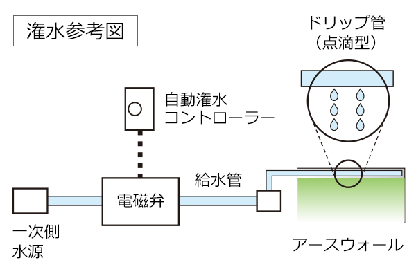

Picnic Turf
屋上緑化はヒートアイランド現象の緩和や
みどりのネットワーク形成による生物多様性の保全など
都市環境の向上に寄与しています。
当社独自の屋上緑化工法である「ピクニックターフ」は、
屋上などの人工地盤を緑化し、人と地域を優しい景観という絆で結びます。
自動潅水装置により水やりを制御します。季節ごとに適した水量、適した時間に潅水します。
また、点滴型のドリップ管を使用することで植物に安定した水量の潅水が可能になります。

教育施設（芝生）
集合住宅 (地被類）
集合住宅 (低木・地被類）
集合住宅（中低木・地被類）